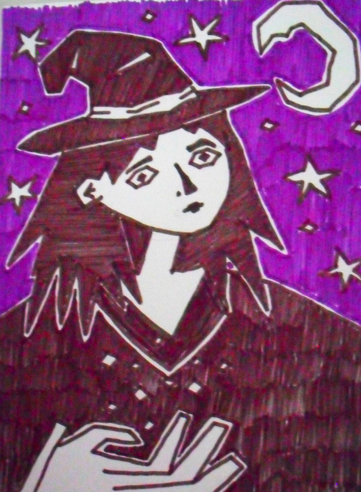
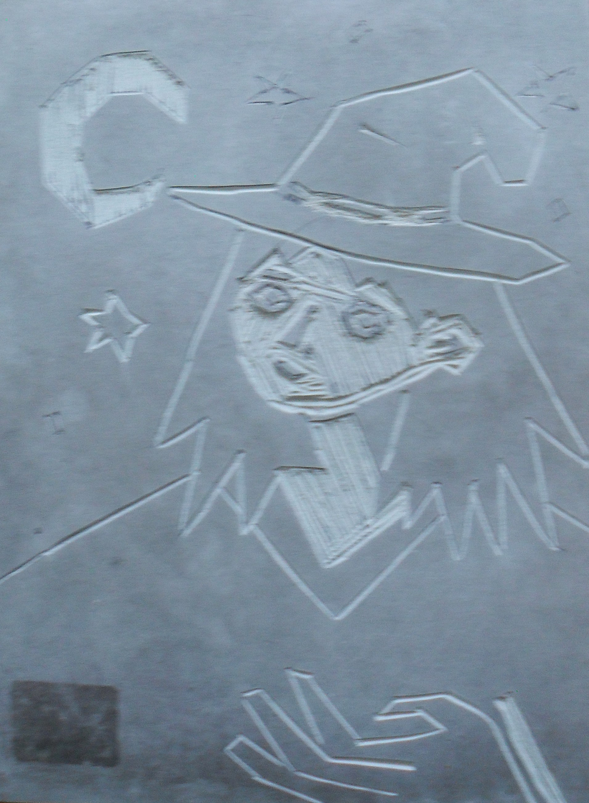
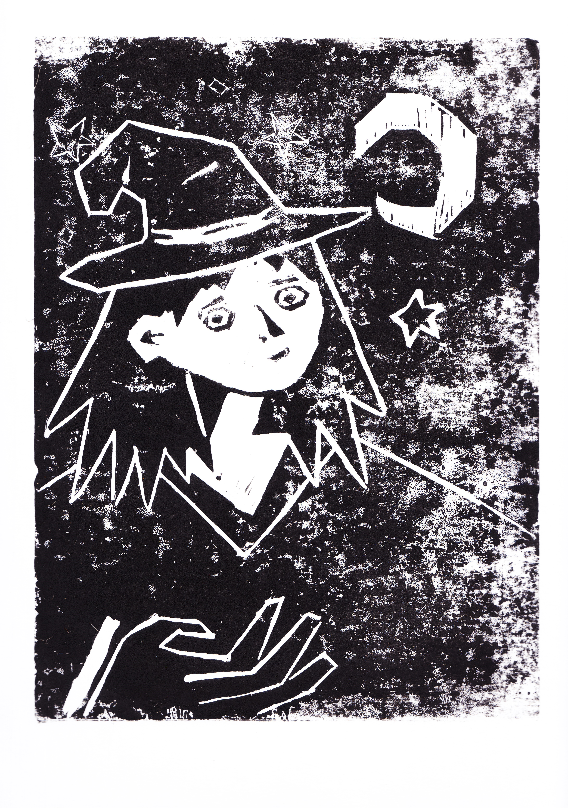

Linogravure
Ma première linogravure !
Aujourd'hui, une amie m'a appris a faire de la linogravue, elle a apporté tout un sac de matériel et cela m'a pris toute une matinée
pour réaliser ma première impression. Dans ce sac il y avait des gouges (petit objet à pointe métalique pour tailler la matrice),
du papier calque, des plaques (faites d'une sorte de plastique mou qui se laissent facilement graver par les gouges) et, bien sûr, de l'encre et un
rouleau pour réaliser nos impressions. Une fois gravée, une plaque peut servir à faire autant d'impressions que l'on souhaite (il faut compter au minimum
5 à 10€ pour une plaque au format A4)
Résumé des étapes
1) faire un dessin (assez simple de préférence), de mon coté, j'avais dessiné ceci :

2) ensuite, décalquer ce dessin puis poser ce calque par-dessus un papier transfert lui même par dessus la plaque de plastique a graver.
3) ainsi, le dessin est transféré sur la plaque : il ne reste plus qu'à graver: les zones creusées seront celles sans peinture (donc blanches si on utilise une feuille blanche pour l'impression)

4) une fois gravée, bien recouvrir la plaque d'encre (ne pas hésiter à repasser de l'encre avec le rouleau une dizaine de fois sur la plaque).
5) enfin, presser la plaque encrée sur la feuille voulue en la posant délicatement puis en appuyant très (très) fort pendant au moins 5 minutes (et en appuyant bien partout)
Résulat
Après toutes ces étapes, vous devriez obtenir un résultat comme celui-ci:

Pour ma part, je n'ai pas assez encré et/ou appuyé vu que des zones sont grises / parsemées de blanc
contact: lililebail@laposte.net | page créée le 07/03/2025 | hébergée par github.io | site et contenu sous licence CC BY-SA 4.0 | A PROPOS